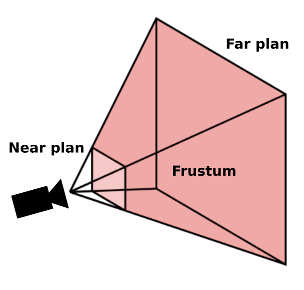

Introduction et mise en place¶
three.js est une bibliothèque Javascript qui permet de réaliser des rendus 3D dans un navigateur Web. three.js utilise WebGL pour le support 3D. WebGL est une API de programmation dérivée de OpenGL ES qui est accessible depuis un navigateur Web. Il faut donc utiliser un navigateur Web et une machine qui supportent WebGL.
Note
Vous pouvez tester le support de WebGL de votre navigateur Web en vous rendant à cette adresse.
three.js fournit principalement :
un moteur de scène permettant de créer des rendus et des animations complexes
un moteur de rendu temps réel
Chargement asynchrone en local¶
Une scène 3D nécessite souvent des assets externes (comme des modèles, des matériaux ou des textures). Pour charger ces assets, three.js utilise un chargement asynchrone (ajax). Pour des raisons de sécurité, certains navigateurs (comme Chrome) n’autorisent pas le chargement asynchrone pour des fichiers ouverts directement depuis son disque dur. Pour contourner cette limitation, il suffit d’installer un serveur Web pour servir les fichiers depuis sa machine.
Astuce
Si vous avez installé python 3 sur votre machine, vous pouvez très facilement disposer d’un serveur Web. Il suffit de lancer la commande suivante depuis le répertoire de travail :
python3 -m http.server
Vous avez un serveur écoutant sur le port 8000 depuis le répertoire de travail.
Astuce
Si vous utilisez Chrome et que vous ne voulez pas utiliser un serveur Web, il est possible d’autoriser le chargement asynchrone en désactivant la stratégie de sécurité depuis la ligne de commande :
chrome.exe --disable-web-security --user-data-dir=c:\tmp\chrome
open -a Google\ Chrome --args --disable-web-security --user-data-dir=/tmp/chrome
google-chrome --disable-web-security --user-data-dir=/tmp/chrome
Le paramètre --user-data-dir indique le répertoire contenant les données de configuration
de Chrome (le répertoire sera créé s’il n’existe pas).
Fichier HTML de base¶
Pour utiliser three.js dans votre projet, vous pouvez le télécharger à depuis https://threejs.org/build/three.js et le stocker dans votre projet. Vous pouvez également le référencer directement dans votre page HTML à partir de cette adresse.
Note
Il existe une version minifiée disponible à cette adresse : https://threejs.org/build/three.min.js
Une page de base pour démarrer un projet three.js ressemble donc à :
<!DOCTYPE html>
<html>
<head>
<meta charset=utf-8>
<title>three.js app</title>
<style>
body {
margin: 0;
overflow: hidden;
}
</style>
</head>
<body>
<script src="three.js"></script>
<script>
// le code ici
</script>
</body>
</html>
Création d’un renderer¶
Le premier objet à créer avec three.js est un moteur de rendu. Cet objet sera
responsable de rendre une image à partir des informations de la scène et d’une caméra.
Le WebGLRenderer permet de créer des rendus 3D en utilisant l’API WebGL. WebGL
permet de créer des images dans un élément <canvas> de la page . Le WebGLRenderer
crée donc un élément <canvas> que l’on doit récupérer grâce avec sa propriété domElement
pour pouvoir l’ajouter dans le document. Il faut ensuite préciser la taille de la fenêtre
de rendu avec la méthode setSize (dans cet exemple on considère que le rendu se fera dans toute la fenêtre) :
1 2 3 4 5 6 7 8 9 10 11 12 13 14 15 16 17 18 19 20 21 | <!DOCTYPE html>
<html>
<head>
<meta charset=utf-8>
<title>three.js app</title>
<style>
body {
margin: 0;
overflow: hidden;
}
</style>
</head>
<body>
<script src="three.js"></script>
<script>
var renderer = new THREE.WebGLRenderer();
document.body.appendChild(renderer.domElement);
renderer.setSize(window.innerWidth, window.innerHeight);
</script>
</body>
</html>
|
L’appel à setSize() à la ligne 18 a pour conséquence de modifier la taille
de l’élément <canvas> créé par le moteur de rendu.
Note
Si vous le souhaitez, il est possible de fournir à la construction d’un
WebGLRenderer l’élément <canvas> à utiliser plutôt que de le laisser
en créer un :
var renderer = new THREE.WebGLRenderer({canvas: document.getElementById("monCanvas")});
Reportez-vous à la documentation du WebGLRenderer pour connaître toutes les options de création.
Création d’une caméra¶
La caméra est la représentation virtuelle de la position de l’observateur. Dans three.js, la caméra est nécessaire au moteur de rendu pour créer l’image finale.
Dans three.js, il existe plusieurs types de caméras qui héritent de la classe de base Camera. La caméra la plus couramment utilisée pour la vue 3D est la PerspectiveCamera Cette caméra définit une projection géométrique dite en perspective, qui imite le comportement de l’œil humain. La projection correspond à une pyramide partant du point de la caméra. Cette pyramide est tronquée par deux plans :
- near plan
Ce plan correspond à la distance la plus proche de la caméra à partir de laquelle un objet de la scène sera visible
- far plan
Ce plan correspond à la distance la plus éloignée de la caméra au delà de laquelle un objet de la scène ne sera plus visible
Note
On parle souvent de clipping pour indiquer qu’un objet de la scène n’est pas pris en compte par la caméra pour le rendu lorsqu’il se situe devant le near plan ou derrière le far plan.
Cette pyramide tronquée de vision définit le frustum, c’est-à-dire l’espace dans lequel un objet sera visible de l’observateur.
Pour créer un objet de type PerspectiveCamera, il faut indiquer 4 paramètres :
- fov (field of view)
Le champ de vision correspondant à l’ange (en degré) vertical d’ouverture du frustum.
- aspect
Le ratio entre la largeur et la hauteur. Pour éviter d’avoir une image déformée, ce ratio doit correspondre à celui du rapport largeur sur hauteur du
<canvas>- near
La distance du near plane dans l’unité de la scène.
- far
La distance du far plane dans l’unité de la scène.
var camera = new THREE.PerspectiveCamera(45, window.innerWidth / window.innerHeight, 0.5, 1000);
Un objet Camera maintient en interne une matrice mathématiques dite matrice de projection qui permet de réaliser les calculs lors de la création d’une image.
Note
Une autre caméra très utile est la OrthographicCamera. Cette caméra crée une projection orthographique qui ne prend pas en compte les points de fuite : les longueurs sont conservées quelle que soit la distance à la caméra. Ce type de caméra est utile pour des représentations de type CAD ou pour des rendus 2D.
Création d’une scène¶
Une scène est une représentation arborescente des objets que l’on souhaite afficher. Une scène est constituée d’un nœud racine contenant des éléments géométriques (ou autres) et qui sont à leur tour des nœuds d’un arbre qui peuvent avoir comme fils d’autres éléments. Nous verrons plus tard, que cette représentation est très pratique, notamment pour créer des animations et pour créer des interactions entre les éléments d’une scène.
Pour créer une scène, il suffit d’en créer une instance :
var scene = new THREE.Scene();
Note
Il est possible de changer la couleur de fond de la scène en modifiant sa propriété background :
// couleur de fond rouge
scene.background = new THREE.Color(1, 0, 0);
Rendu d’une scène¶
Le rendu d’une scène est effectué par la méthode render du WebGLRenderer à laquelle on passe la caméra et la scène à rendre :
renderer.render(scene, camera);
Ce qui nous donne le code complet suivant :
<!DOCTYPE html>
<html>
<head>
<meta charset=utf-8>
<title>three.js app</title>
<style>
body {
margin: 0;
overflow: hidden;
}
</style>
</head>
<body>
<script src="https://threejs.org/build/three.min.js"></script>
<script>
// création du renderer
var renderer = new THREE.WebGLRenderer();
document.body.appendChild(renderer.domElement);
renderer.setSize(window.innerWidth, window.innerHeight);
// création de la caméra
var camera = new THREE.PerspectiveCamera(45, window.innerWidth / window.innerHeight, 0.5, 1000);
// création de la scène
var scene = new THREE.Scene();
// couleur de fond rouge
scene.background = new THREE.Color(1, 0, 0);
// rendu
renderer.render(scene, camera);
</script>
</body>
</html>
Vous pouvez télécharger ce fichier directement.
Cette scène n’a cependant pas un grand intérêt car elle est vide et se contente d’afficher un fond rouge. Nous verrons au chapitre suivant comment ajouter des éléments dans la scène.
Redimensionnement du canevas¶
three.js ne prend pas en compte automatiquement le redimensionnement de la fenêtre.
Si vous voulez faire un rendu sur la totalité de la fenêtre et que vous voulez prendre
en compte le redimensionnement de la fenêtre, alors il vous faut ajouter un listener DOM
sur l’événement resize de la fenêtre.
1 2 3 4 5 6 7 8 9 10 | var camera = new THREE.PerspectiveCamera(75, 1, 0.5, 1000);
function updateViewportSize() {
camera.aspect = window.innerWidth / window.innerHeight;
camera.updateProjectionMatrix()
renderer.setSize(window.innerWidth, window.innerHeight);
}
window.addEventListener("resize", updateViewportSize);
updateViewportSize();
|
Il n’est plus nécessaire de fournir un ratio largeur sur hauteur correct au
moment de la création de la caméra. Il suffit d’appeler une première fois la méthode
updateViewportSize. La ligne 5 est très importante. Elle signale à la caméra
qu’elle doit recalculer sa matrice de projection. Lorsqu’on modifie les
caractéristiques internes de la caméra (FOV, aspect…), il faut toujours
appeler cette méthode pour finir.